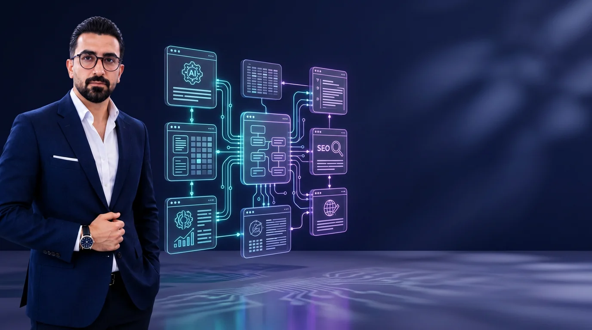

حافظه هوشمند و Site BrainSmart Memory & Site Brain
محتوای سایت، پایگاه دانش و دادههای شما به زمینه دقیق برای تولید و پاسخگویی تبدیل میشوند.Turn content, knowledge and site data into grounded context for generation and answers.

یک فرمان بده؛ اتحادیار محتوا میسازد، ویدیو خروجی میدهد، محصولات ووکامرس را تقویت میکند، اتوماسیون اجرا میکند و گزارش مدیر تحویل میدهد—واقعی، فارسی و داخل وردپرس.
Give one command. Etehadyar creates content, produces video, improves WooCommerce products, runs automations and delivers management reports—inside WordPress.
بهجای رفتوآمد بین چند ابزار، موضوع را یکبار وارد کنید؛ اتحادیار خروجیهای متناسب با هر کانال را میسازد و داخل وردپرس نگه میدارد.
Enter a topic once. Etehadyar builds channel-ready assets and keeps the workflow inside WordPress.
روی هر بخش بزنید و اسکرینشات واقعی نسخه ۶.۵ را ببینید.
Choose a workspace to inspect the real v6.5 interface.
فروش، سفارشها، بازدید، عملکرد محتوا و وضعیت سایت در داشبوردی سریع و فارسی.Sales, orders, traffic, content and site health in one fast dashboard.
طول، لحن و سبک را تعیین کنید؛ مقاله، تصویر، ویدیو، پادکست و خروجی شبکه اجتماعی را کنار هم تحویل بگیرید.Set length, tone and style, then generate every channel asset together.
سناریو، عکس و صدا را به تایملاین ببرید و MP4، زیرنویس SRT، JSON و بسته ZIP تحویل بگیرید.Turn scripts, images and audio into MP4, SRT subtitles, JSON timelines and ZIP packages.
محصولات ضعیف را پیدا کنید، تکی یا دستهای تقویت کنید و از یک ایده محصول کامل با تصویر بسازید.Find weak products, improve them in batches and build complete products from a single idea.
خلاصه اجرایی، محصولات ضعیف و لاگ اتوماسیون را با خروجی PDF و XLSX واقعی تحویل بگیرید.Export executive summaries, weak products and automation logs as real PDF and XLSX files.
تریگرهای زمانبندیشده و رویدادهای وردپرس، جریانهای آماده را اجرا میکنند و هر نتیجه با زمان، وضعیت و خطا در لاگ ثبت میشود.
Scheduled triggers and WordPress events run ready-made workflows while every result, duration and error is logged.
اتحادیار فقط خروجی تولید نمیکند؛ دانش سایت، داده جستجو، محصولات و فرآیندهای شما را به یک سیستم متصل تبدیل میکند.
Etehadyar connects site knowledge, search data, products and workflows into one operating system.
محتوای سایت، پایگاه دانش و دادههای شما به زمینه دقیق برای تولید و پاسخگویی تبدیل میشوند.Turn content, knowledge and site data into grounded context for generation and answers.
OpenAI، Gemini، Claude، GapGPT و APIهای سازگار با Profile مستقل.
Flux یا OpenAI، ذخیره مستقیم در Media Library، Alt و Caption آماده.Flux or OpenAI, direct Media Library storage, alt text and captions.
از یک دستور، برگه پیشنویس Gutenberg و ساختار آماده لندینگ بسازید.Turn a sentence into a Gutenberg draft and landing-page structure.
نام، پیام و رنگ قابل تنظیم؛ پاسخگویی متصل به دانش واقعی سایت.Custom identity, message and color with answers grounded in site knowledge.
AES-256-GCM، درخواستهای سمت سرور، Nonce و دسترسی، Trace ID، Health Check و بروزرسانی مستقیم از ۵.۲۳.AES-256-GCM, server-side requests, access controls, trace IDs, health checks and a direct upgrade path from 5.23.
بخشی از مسیر اصلی را اینجا ببینید؛ جزئیات تمام ۵۴ نسخه در صفحه تاریخچه ثبت شده است.
See the major milestones here. All 54 production releases are documented in the changelog.
مقاله، SEO/GEO، تقویم، Cluster و ویدیو سناریوContent intelligence foundation
اتاق فرمان، حافظه، دستیاران و تجربه جدیدCommand center, memory and agents
یک موضوع، هفت خروجی و تصویر FluxSeven outputs and Flux images
MP4، SRT، ZIP و فروشیار واقعیReal video and Woo assistant
چهار جریان آماده، Cron و لاگ واقعیReady workflows, cron and logs
PDF مدیریتی و XLSX واقعیManagement PDF and real XLSX
نسخه نهایی یکپارچه با هویت اتحادیارThe unified final Etehadyar release
اتحادیار ادامه مسیر EtehadWP AI Writer است؛ طراحیشده در اتحاد وردپرس و توسعهیافته توسط سجاد معصومی برای سادهکردن عملیات روزانه محتوا، فروش و مدیریت سایت.
Etehadyar continues the EtehadWP AI Writer journey, designed by EtehadWP and developed by Sajad Masoumi for real content, commerce and site operations.
پرداخت داخلی با تومان یا خرید بینالمللی با دلار؛ محصول در هر دو مسیر یکسان است.
Pay locally in toman or internationally in USD. The product is identical.
برای خرید و پرداخت داخل ایرانFor purchases inside Iran
For international purchases
هزینه احتمالی Providerها و APIهای ثالث طبق حساب همان سرویس محاسبه میشود. جزئیات لایسنس، فعالسازی و پشتیبانی در مرحله خرید نمایش داده میشود.Third-party provider usage is billed by each service. License, activation and support details are shown at checkout.
اطلاعات فنی و مسیر خرید را شفاف بررسی کنید.
Review technical details and purchase information clearly.
نسخه کامل ۶.۵ برای پرداخت داخلی ۱۵٬۰۰۰٬۰۰۰ تومان و برای پرداخت بینالمللی ۱۵۰ دلار است.The complete v6.5 is 15,000,000 toman locally or $150 internationally.
بله؛ مسیر ۶.x برای ارتقای مستقیم و حفظ تنظیمات، Providerها و دادههای قبلی طراحی شده است. مثل هر بروزرسانی مهم، قبل از اجرا Backup کامل بگیرید.Yes. The 6.x line is designed to preserve existing settings, providers and data. Take a full backup before any major update.
برای MP4 مستقیم روی سرور، FFmpeg لازم است؛ بدون آن همچنان پیشنمایش HTML، زیرنویس SRT، تایملاین JSON و بسته ZIP قابل استفاده هستند.Server-side MP4 rendering needs FFmpeg. Without it, HTML preview, SRT, JSON timeline and ZIP output remain available.
OpenAI، Gemini، Claude، GapGPT و APIهای سازگار. کلیدها با Profile مستقل و بهصورت رمزنگاریشده مدیریت میشوند.OpenAI, Gemini, Claude, GapGPT and compatible APIs with encrypted independent profiles.
اتحادیار نام محصول و سیستمعامل هوشمند وردپرس است؛ اتحاد وردپرس برند و تیم سازنده محصول است.Etehadyar is the product. EtehadWP is the brand and team behind it.
خیر؛ درخواستهای اصلی از سمت سرور ارسال میشوند و کلیدها با Vault و Salt وردپرس رمزنگاری میشوند. Frontend فقط وضعیت وجود کلید را دریافت میکند.No. Core requests are server-side, secrets are encrypted with the vault and WordPress salts, and the frontend only receives connection status.
نسخه کامل اتحادیار ۶.۵ را دریافت کنید و وردپرس را از مجموعهای از ابزارها به یک سیستم متصل تبدیل کنید.
Get Etehadyar 6.5 and turn WordPress from scattered tools into one connected operating system.